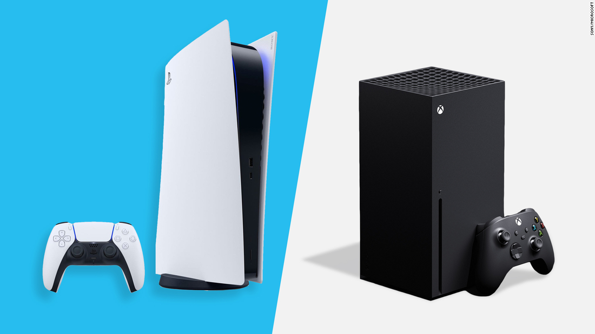
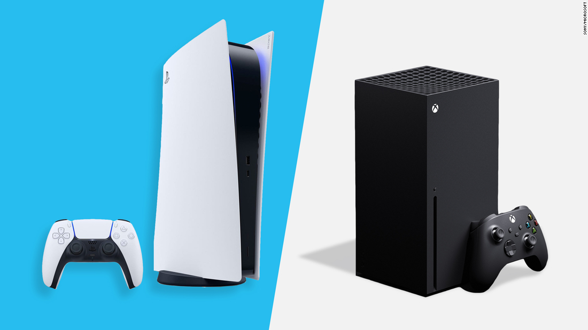

Consoles have some advantages over PCs, they are easy to use, don't require upgrades, and make playing multiplayer with friends simple, and are generally cheaper. Many gamers choose to play with a console because they are designed for easy set up and maintenance. Console gaming can start minutes after you remove the system from the box. There are no build times or technical skills needed to start having fun, plus, newer consoles can be used to stream movies, TV shows, and music adding another perk to owning a console. Another advantage of console gaming is you can keep playing your games without worrying about hardware becoming obsolete. However, console manufacturers will release new consoles in line with improvements in technology, so there is still a risk of old consoles not being supported for new games. So,before committing to a console, consider which systems offer the games you love, because not all consoles offer the same range of games.